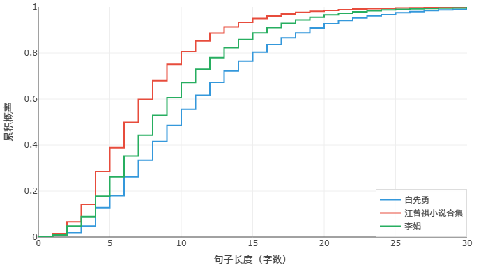
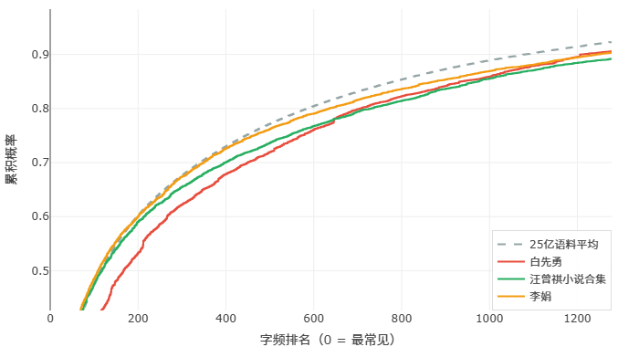

白先勇的句子长，他是一个差作家吗？
上一篇文章我们聊了鲁迅、老舍、张爱玲、汪曾祺，数据跑出来，句子短的、用词丰富的，都是公认的大师。今天我们换一组人，把汪曾祺、李娟和白先勇三位作家放在一起比一比。先看图：


图上可以看到，白先勇的句子写得非常非常长——甚至比当代作家李娟还要明显长出一大截。如果只看第一张图，按照"短句即功力"的朴素直觉，是不是就该得出"白先勇盛名难副"的结论了？
当然不行。白先勇的文学能力早已得到广泛认可，不是一个句子长度数据就能推翻的。再看第二张图，他的词汇丰富度是非常高的——在前四五百个常用字的区间里，他和其他好作家拉开了不少距离，常用字用得少，说明他调用了大量其他的字。字是组成词语、构成意象的基本单位，常用字占比低，意味着他的文本里一定有很多脱离了一般作家讨论范畴的东西。在不怀疑他文学地位的前提下，我们去他文本里看看，他到底写了些什么？
这一看，结论来得很快。为什么白先勇的句子普遍偏长？主要可能是因为我们选取的这个合集里，他讨论西方的事情比较多。
举几个具体的例子。说地名：汪曾祺写高邮、昆明，才两个字；到了李娟这里，阿勒泰、布伦托海，三四个字起来了；再到白先勇笔下——圣芭芭拉、新墨西哥州，四五个字起步。说人名：汪曾祺李娟是明海英子阿孜拉，中国人的名字总归两三个字居多；白先勇用中文转写外国人的名字，那自然是五六个字起步。当一篇文章集中讨论这些内容的时候，句子长度自然就上去了。这里也要说明一下，白先勇的语料我们没能找到合适的小说集，此处用的是一本论文集。
再谈词汇丰富度的问题。白先勇用词生僻，除了和他本人文学修养高、文风带古有关，和他所讨论的东西也很分不开——论文集讨论的是专门的学术话题，术语和冷僻字眼自然比小说多得多。
所以，我们不得不再次强调：不能简单地上传文本，然后对着图片就解释一个作家的好坏。图片是可视化的数据，数据能提供给我们的只有信息，没有观点。本站只是一个帮你提炼信息的工具，你必须要自己严格控制变量，知道自己要什么才行。
话说回来，句子变长和词汇丰富度变高，放到整个社会发展的背景下来看，其实是一个必然的趋势。
举个最简单的例子。"饱和脂肪酸"这五个字，你要是把它说成"脂肪酸"，意思就变了——前者是堵塞血管的坏东西，后者是人体必需的基本营养。随着科学发展和社会变化，这种长长的、精确的词语会不断涌现。你想把它拆短？拆不了，拆了就不是那个意思了。句子自然也就再也短不回去了。
同样的道理，因为社会变了，我们讨论的东西和古人讨论的东西不再一样，常用的字词也一定会发生迁移。古人写"驿"、写"轿"、写"砚"，这些字在今天的使用频率大幅下降；而今天的"互联""基因""模块""算法"，古人字典里根本没有。字频统计捕捉到的，不只是一个作家的风格，更是整个时代的背影。
这些不算什么高深的道理。但都是使用本网站的注意事项。记住：数据给信息，你给判断。